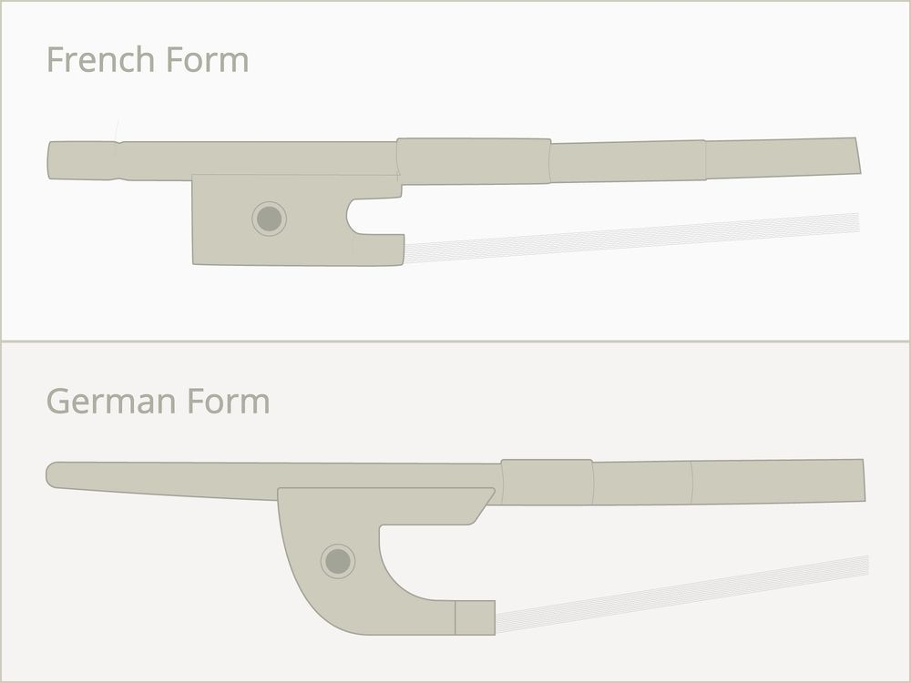
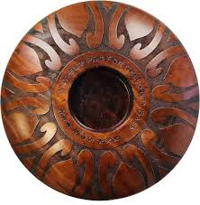
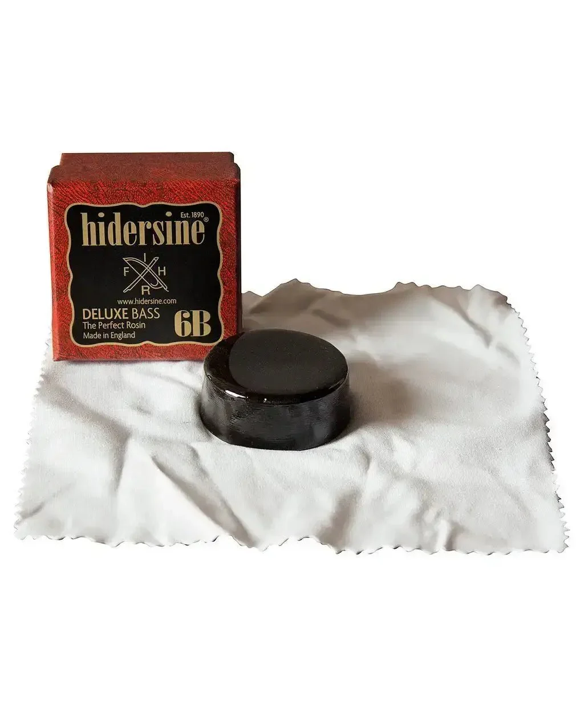
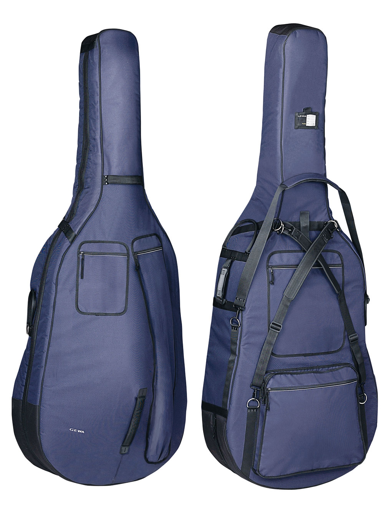

Home
History
Purchasing a Double Bass
Double Bass Accessories
Images
Home
History
Purchasing a Double Bass
Double Bass Accessories
Images
Of course, along with the bass itself, there are many, many different accessories (some more necessary than others) that deal with transportation, protection, performance and sound enhancement, or maintenance.
One of the essentials accessories to the double bass is the bow. The bow is crucial as it is the primary tool for producing sustained, resonant, and nuanced sound that transforms the instrument from a rhythmic, plucked voice, into a melodic, versatile voice. There are 2 main types of bows: German bow, and French bow.
The German bow is held with an underhand grip. It has a tall frog, and a wide ribbon of hair. This bow is preferred for lower string access because of its underhand hold, and is better at off-the-string bow strokes, like spiccato.
The French bow is held with an overhand grip, and looks similar to a large cello bow. The French bow is preferred for faster and intricate passages, as well as playing in the upper register.

Another essential to the double bass is an endpin rest/anchor, because without it, you'll be slipping all over the place, and won't be able to play properly.

Rosin allows you to ake sound using the bow by providing a thin, sticky layer to the bow hairs, that create frction on the string and make the string vibrate. Without rosin, the bow wouldn't make noise on the strings because it would be unable to grab onto the strings and make them vibrate.

To get your bass well tuned, you will need a good tuner (unless you have perfect pitch).

If you plan on traveling with your bass, it is important you get it a gig bag to keep it safe during transportation.
